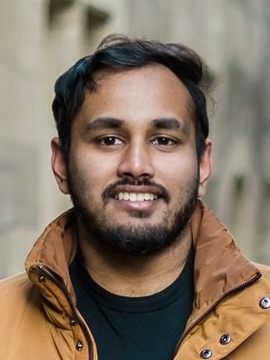
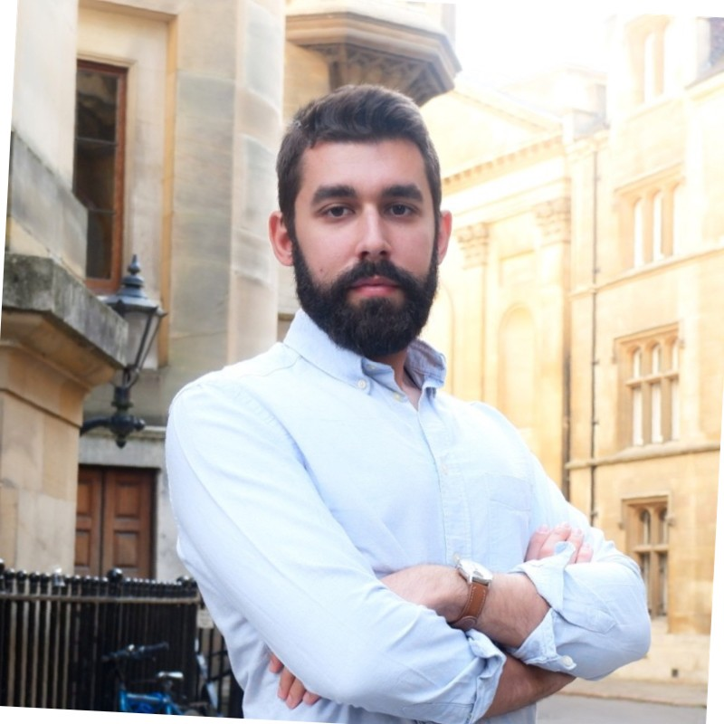
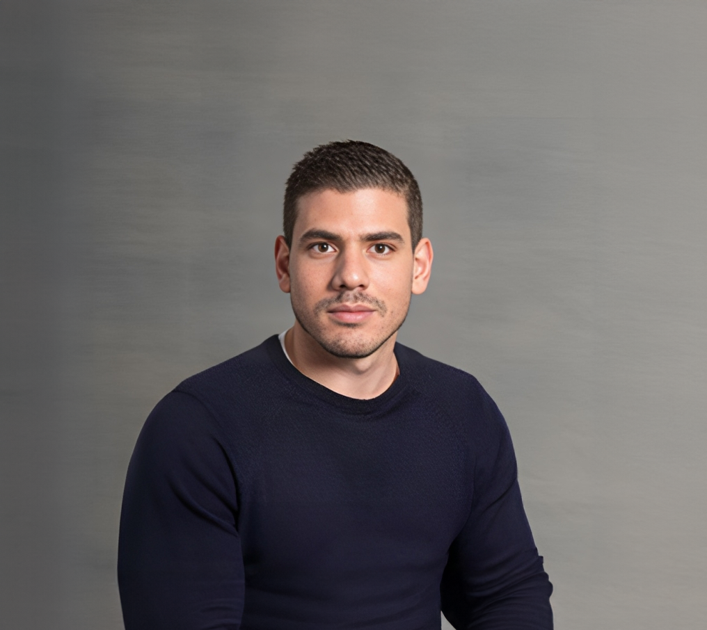
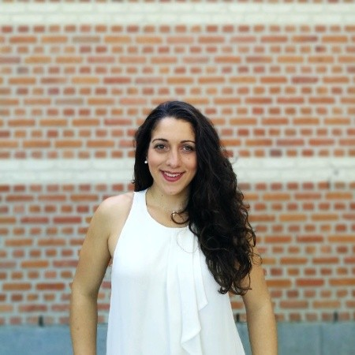
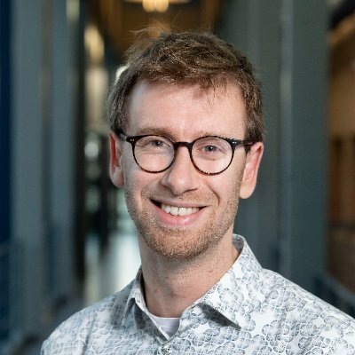
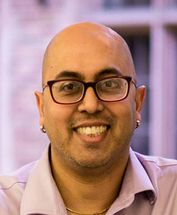

Organizing committee
|  | Lakmal Meegahapola ETH Zurich, Switzerland Bio: Bhawana Chhaglani is a fifth year CS Ph.D. candidate at the University of Massachusetts Amherst. Her research interests lie broadly in the area of Audio Sensing, Wearable Health Sensing, Privacy-Aware Sensing, and Ubiquitous Computing. She has interned in Dolby Laboratories, Samsung Research, Nokia Bell Labs, and Microsoft Research. She has been a TPC member for ACM SenSys'25 Poster and shadow PC member for ACM SenSys'22. Additionally, she was a student volunteer at ACM SenSys'22, IEEE BSN'23, and ACM UbiComp'24. |
| Lakmal Meegahapola ETH Zurich, Switzerland Bio: Lakmal Meegahapola is a postdoctoral researcher at ETH Zürich, and he got his PhD in Electrical Engineering from EPFL. His research interests lie at the intersection of mobile and wearable sensing, digital health, machine learning, and human-computer interaction. Previously, he has held positions at Google Research, Nokia Bell Labs, the University of Cambridge, and Singapore Management University, and received his bachelor's degree from the University of Moratuwa, Sri Lanka. Lakmal has received numerous awards for his research, including being named a Rising Star in Cyber-Physical Systems (CPS) in 2024, one of the four finalists for the ACM UbiComp Gaetano Borriello Outstanding Student Award in 2023, and Young Researcher at the Heidelberg Laureate Forum 2024. He also won a IMWUT Distinguished Paper Award at UbiComp 2023. |
|
|  | Dimitris Spathis Nokia Bell Labs & University of Cambridge, United Kingdom Bio: Dimitris Spathis is a senior research scientist at Nokia Bell Labs, Cambridge (UK) and a visiting researcher at the University of Cambridge. His work enables AI to make the most out of real-world multimodal data through label-efficient and robust ML. He previously worked at Microsoft Research, Telefonica Research, Ocado, and Qustodio. His recent work includes publications in top venues such as NeurIPS, KDD, and Nature Digital Medicine. Last, he serves on the program committees of leading academic conferences (AAAI, IJCAI, and KDD), and his research projects have been featured in international media (BBC, CNN, Guardian, Washington Post, Forbes, and Financial Times). |
|  | Marios Constantinides Nokia Bell Labs & University of Cambridge, United Kingdom Bio: Marios Constantinides is a Senior Research Scientist at Nokia Bell Labs, Cambridge (UK) and a visiting researcher at the University of Cambridge. He works in the areas of human-computer interaction, UbiComp, and responsible AI. His current research focuses on building AI-based technologies that augment people's interactions and communication, with a particular focus on the workplace. He has been a member of the organizing committee of the SensiBlend workshop at UbiComp 2021, and co-organized two Special Interests Groups (SIG) at CHI 2023 on future of work and responsible AI. |
 |
Han Zhang University of Washington, United States Bio: Han Zhang is a 4th-year PhD student at the University of Washington. Her works lie in the intersection of human-computer inter- action, ubiquitous computing, applied machine learning, and data science. Her current research primarily focuses on modeling hu- man behaviors through mobile and wearable sensing technologies, as well as designing responsible interactive tools tailored for various stakeholders to support human well-being. |
|  | Sofia Yfantidou Kinetic Analysis, The Netherlands Bio: Sofia Yfantidou is a Data Scientist at Kinetic Analysis, aiming at improving life quality with human motion data. She holds a Ph.D. in "Human-centered Machine Learning for Mobile and Wearable Sensing Data" from the Aristotle University of Thessaloniki, for which she received a Marie Skłodowska-Curie fellowship from the Innovative Training Network "Real-time Analytics for the Internet of Sports" (RAIS). She works at the intersection of ubiquitous computing and machine learning fairness. Her current research focuses on defining, quantifying, and mitigating biases in data and models for health and well-being. She is a Heidelberg Laureate Forum alumna, a Grace Hopper scholar, and a European Joint Master Degree graduate in "Big Data Management and Analytics". |
|  | Niels van Berkel Aalborg University, Denmark Bio: Niels van Berkel is an Associate Professor at Aalborg University. His work focuses on the design and evaluation of intelligent computing systems, particularly in real-world contexts, publishing in HCI, Social Computing, and Ubiquitous Computing. He has previously served as organiser of workshops at UbiComp ("UbiTtention" 2020, "Mobile Human Contributions" 2018, "Sensors & Behaviour" 2018) and CHI ("2VT" 2021, "Emergent Interaction" 2021), and served on the editorial board for IJHCS (2019-present) and ACM TiiS Special Issue on Human-Centered Explainable AI. |
|  | Anind K. Dey University of Washington, United States Bio: Anind K. Dey is the Dean and Professor of the Information School at the University of Washington. For more than 20 years, his research has focused on the intersection of human-computer interaction, machine learning, and ubiquitous computing. |